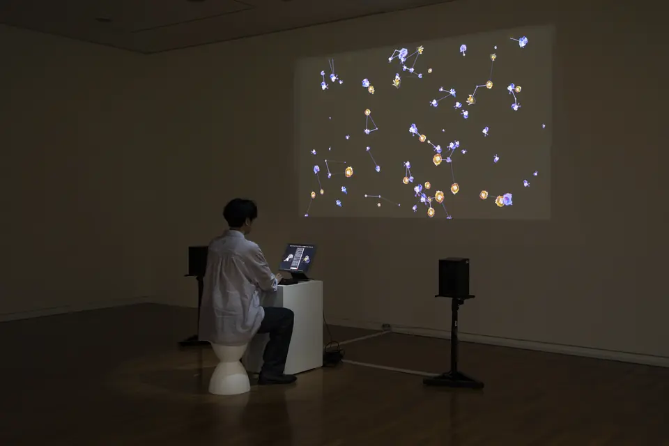
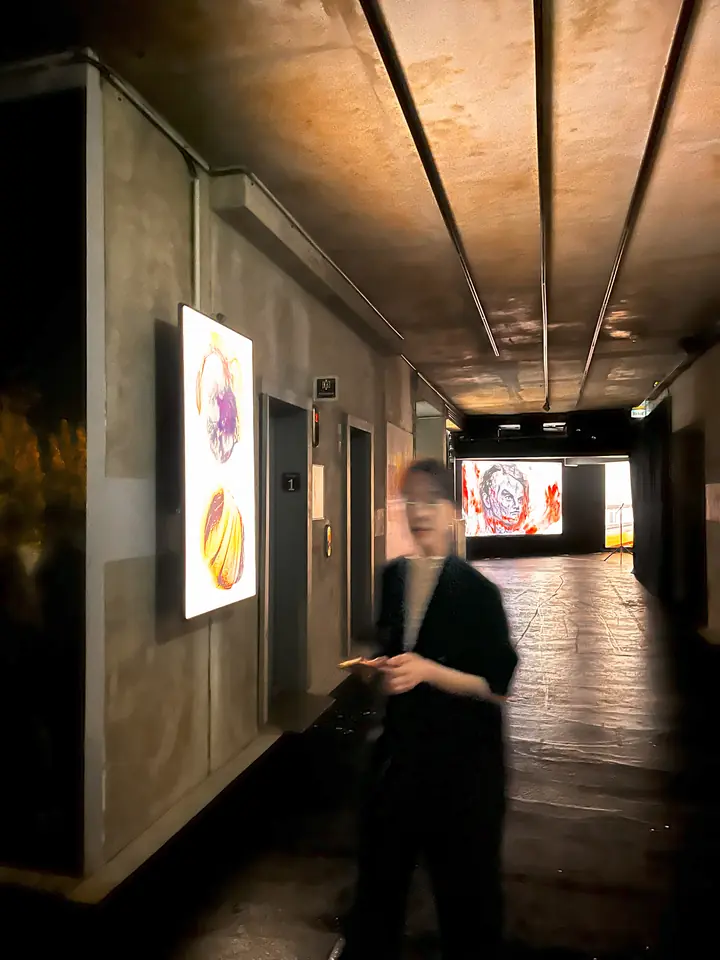
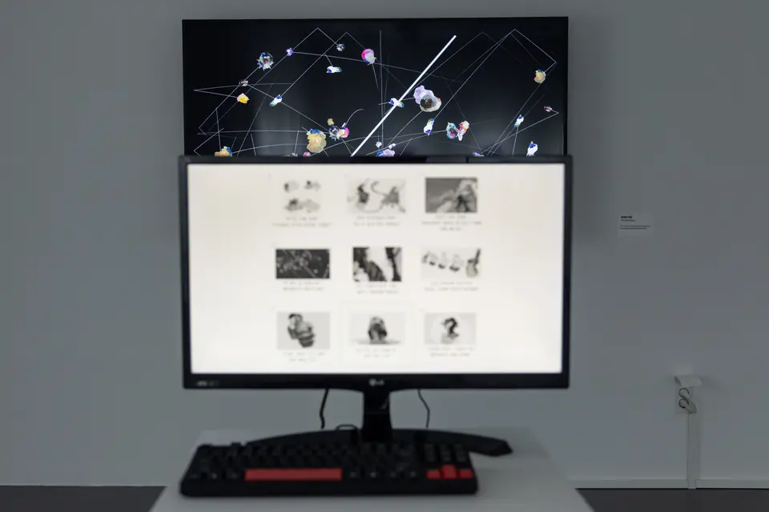
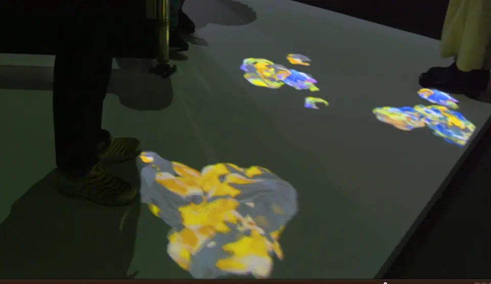
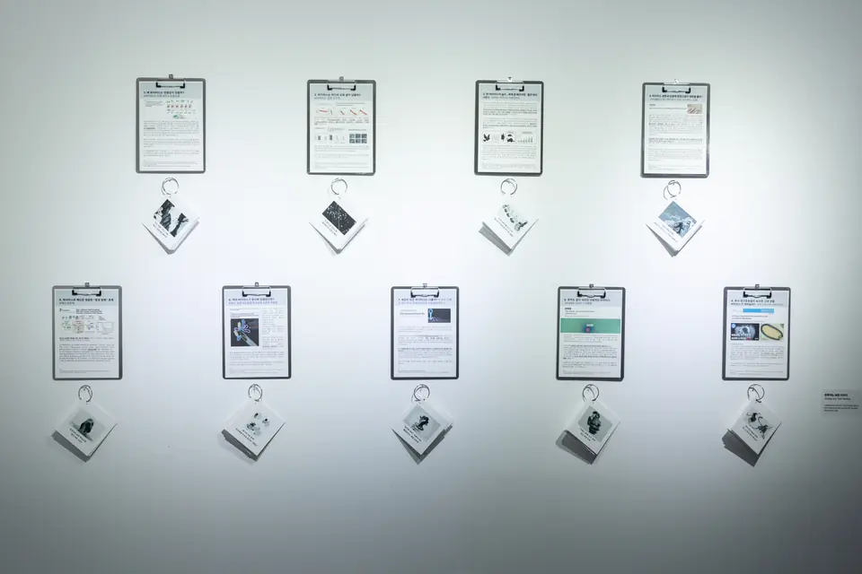
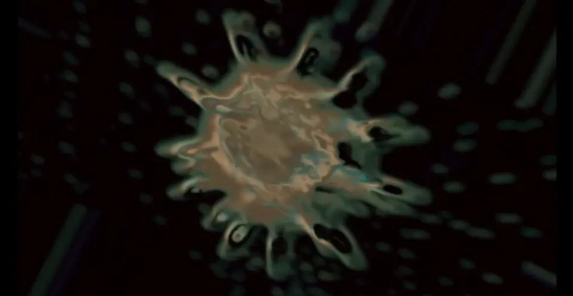
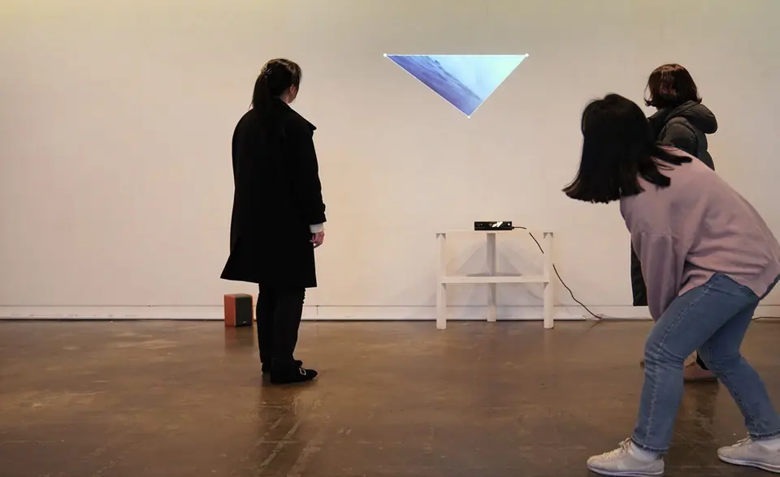
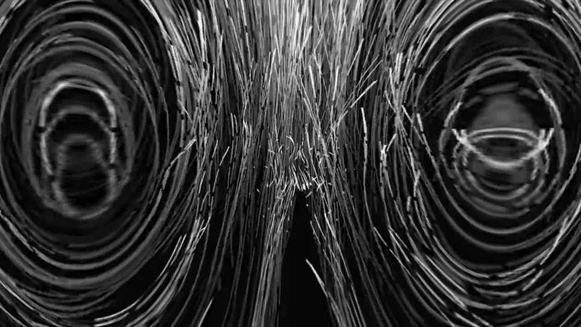
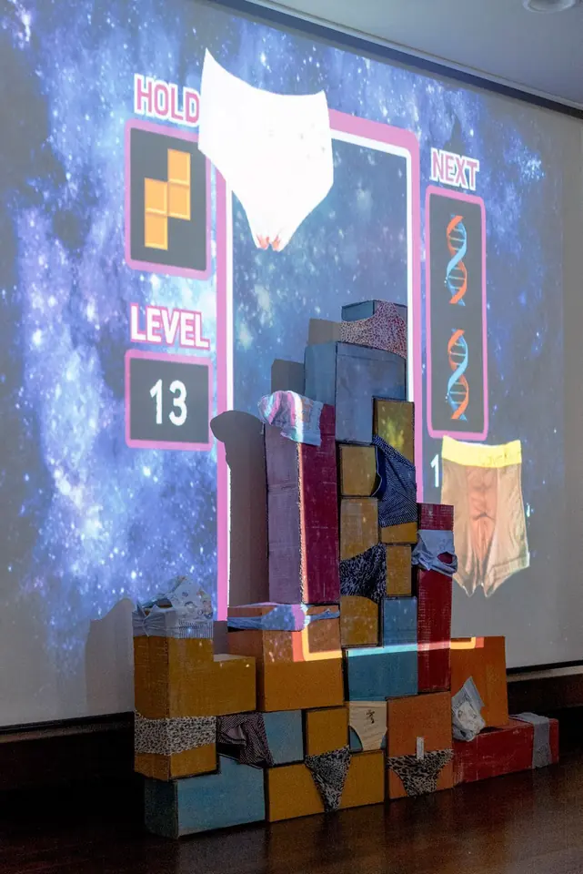

Portfolio
-

2025 Transactions of Desire Interactive installationZKM, Karlsruhe · ISEA2025, Seoul -

2025 Fragments of Desire: Mutating Objects Video artGrand Palais Immersif, Paris -

2024 Infected Desires Interactive installationArtience × KRIBB, Daejeon -

2024 Flow and Shield Interactive installationArtience × KRIBB, Daejeon -

2024 Viruses and Their Desires Narrative installationArtience × KRIBB, Daejeon -

2020 The Sign Digital art with COVID-19 dataGyeonggi Cultural Foundation, online -

2020 Making a Window Interactive installationYonsei University, Seoul -

2019 Circulation: Wave and Negentropy VideoIBS Quantum Nanoscience Art Competition, Seoul -

2017 Surviving Blocks Mixed-media installationArtience 30×30, Daejeon